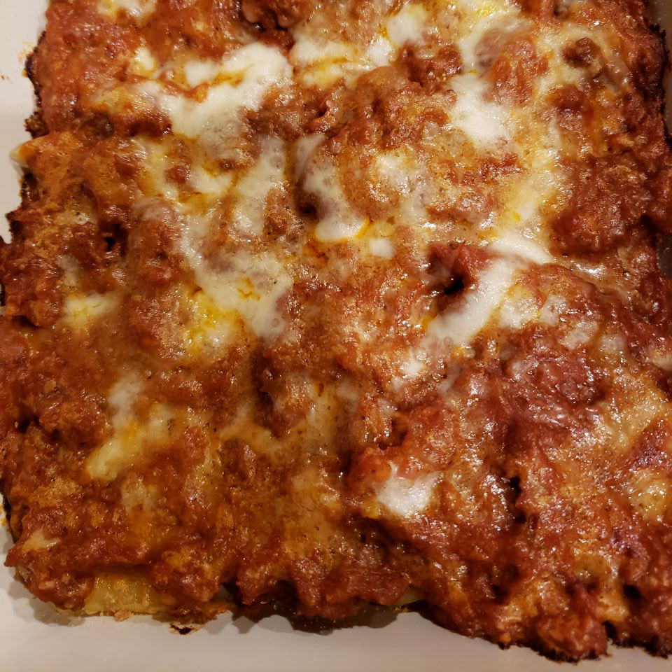

Pasta Bake

This delicious recipe is a must try! Whether your cooking
for two, or cooking for the fam. This pasta is perfect
in every scenario. A quick and easy one to!
Cook: 35 Mins
Total: 40 Mins
Prep: 5 Mins
Servings: 4
Yield: 4 Servings
Ingredients
- ¾ pound mostaccioli pasta
- 1 (15.5 ounce) jar spaghetti sauce, or
more to taste
- 12 frozen cooked meatballs, thawed
- 1 (8 ounce) package shredded mozzarella cheese
Steps
Step 1
Preheat the oven to 350 degrees F (175 degrees C).
Step 2
Bring a large pot of lightly salted water to a boil. Add mostaccioli and cook,
stirring occasionally, until tender yet firm to the bite, about 11 minutes. Drain.
Step 3
Transfer mostaccioli to a large glass baking dish.
The pasta should reach about halfway to the rim of the dish.
Cover with as much spaghetti sauce as you like,
at least enough to almost cover the pasta.
Step 4
Place meatballs in a microwave-save dish and heat in
the microwave for about 3 minutes. Spread out on top of the pasta.
Cover entirely with mozzarella cheese.
Step 5
Bake in the preheated oven until heated through and
cheese is completely melted, 15 to 20 minutes.